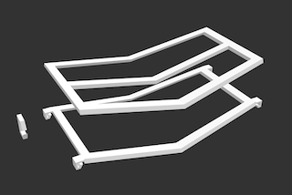
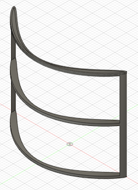
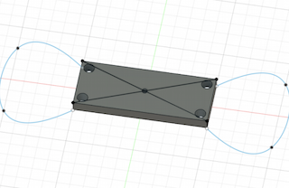
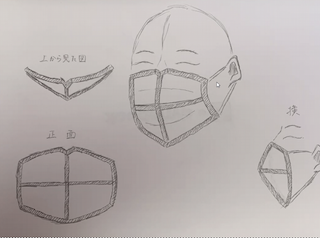
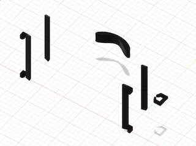
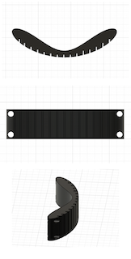
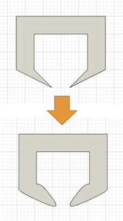

【4月グループワーク】
ものづくり班（ものづくりのみ）では、常川くんのマスク案を
ベースにして今週は各々でアイデアをfusion260にてにて、付け加えていくことととなった。
初期案↓

曲線案↓

留め具案↓

立体案↓

フレームの削減

・初期案の重量 78.746g
・およそ、ごぼう一本分
・初期案の問題点
→重すぎる
→顔にフィットしない
フレームを大幅に削減することで軽量化と顔フィットを実現
留め具問題

・結ぶ案
紐一本でできる
しっかりと固定できる
・引っ掛け案
着脱がしやすい
調節がしやすい
→２ＷＡＹにすればいいではないか！！！！！！！
フレーム本体の留め具問題

先端部分を曲線にすることで・・・
・はまりやすい
・破損しにくい
・痛くない
反省点
・世にあるものとどう違うか（類似品との比較がない）
・実際に布を挟んだイメージはあったほうがいい
・調べた経緯（自己満のモノ作りじゃダメ）
・独創的なもの→普通すぎる
・今困っているが、その後も使えるように